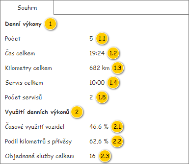

Panel slouží k zobrazení souhrnných informací o kolekci Denních výkonů. Vstupem panelu jsou pak následující data:
Poznámka: Pokud na je vstupu předáno NULL nebo prázdná kolekce, je v panelu zobrazen pouze zástupný text: Žádný denní výkon není k dispozici.

| Callout | Komponenta | Nadpis | Typ komponenty | Příklad hodnoty | Hodnota | Výchozí hodnota | Formát | Zpřístupněná | Viditelná | Chování | Validace | Poznámka |
|---|---|---|---|---|---|---|---|---|---|---|---|---|
| 1 | Nadpis skupiny se souhrnnými informacemi o denních výkonech | – | Label | – | Denní výkony | – | – | – | Vždy | – | – | – |
| 1.1 | Počet | Počet | Label | 5 | Získání souhrnných informací | – | – | Vždy | – | – | – | |
| 1.2 | Čas celkem | Čas celkem | Label | 19:24 | Získání souhrnných informací | – | <Čas celkem> | – | Vždy | – | – | – |
| 1.3 | Kilometry celkem | Kilometry celkem | Label | 682 km | Získání souhrnných informací | – | – | Vždy | – | – | – | |
| 1.4 | Servis celkem | Servis celkem | Label | 10:00 | Získání souhrnných informací | – | – | Vždy | – | – | – | |
| 1.5 | Počet servisů | Počet servisů | Label | 2 | Získání souhrnných informací | – | – | Vždy | – | – | – | |
| 2 | Nadpis skupiny se souhrnnými informacemi o využití denních výkonů | – | Label | – | Využití denních výkonů | – | – | – | Vždy | – | – | U hodnot této skupiny jsou uvedeny konkrétní texty ToolTipu vysvětlující, jak byla konkrétní hodnota získána. |
| 2.1 | Časové využití vozidel | Časové využití vozidel | Label | 46,6 % | Získání souhrnných informací | – | <Časové využití vozidel> % | – | Vždy | – | – | ToolTip hodnoty: Průměr podílů předpokládané doby jízdy a pracovní doby. |
| 2.2 | Podíl kilometrů s přívěsy | Podíl kilometrů s přívěsy | Label | 62,6 % | Získání souhrnných informací | – | – | Vždy | – | – | ToolTip hodnoty: Průměr podílů předpokládané ujeté vzdálenosti s přívěsem a celkové předpokládané ujeté vzdálenosti. | |
| 2.3 | Objednané služby celkem | Objednané služby celkem | Label | 16 | Získání souhrnných informací | – | – | Vždy | – | – | ToolTip hodnoty: Celkový počet naplánovaných objednaných služeb. |
Souhrnné informace o Denních výkonech jsou získány voláním 203UC07: Získat souhrnné informace o denních výkonech, na vstup UC jsou pak předány následující hodnoty:
Hodnoty získané na výstupu volaného UC jsou pak zobrazeny v panelu – viz sloupce Formát v tabulce s Přehledem UI komponent.
| Odkaz | Stručný popis změny/doplnění |
|---|---|
| Přehled UI komponent | Doplněna informace o specifickém ToolTipu pro hodnoty skupiny s časovým využitím. |